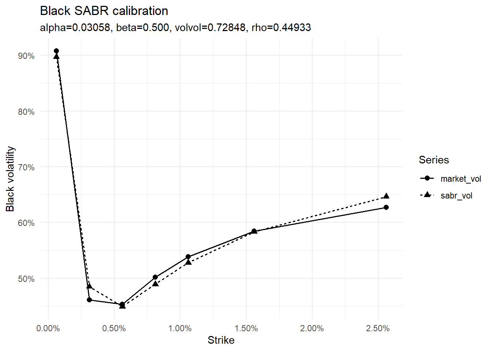
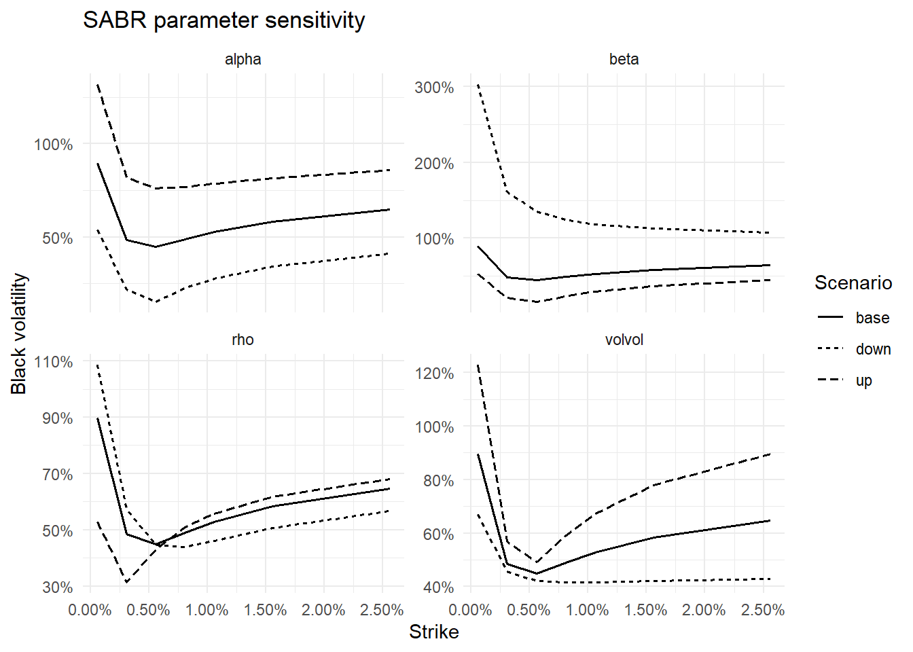
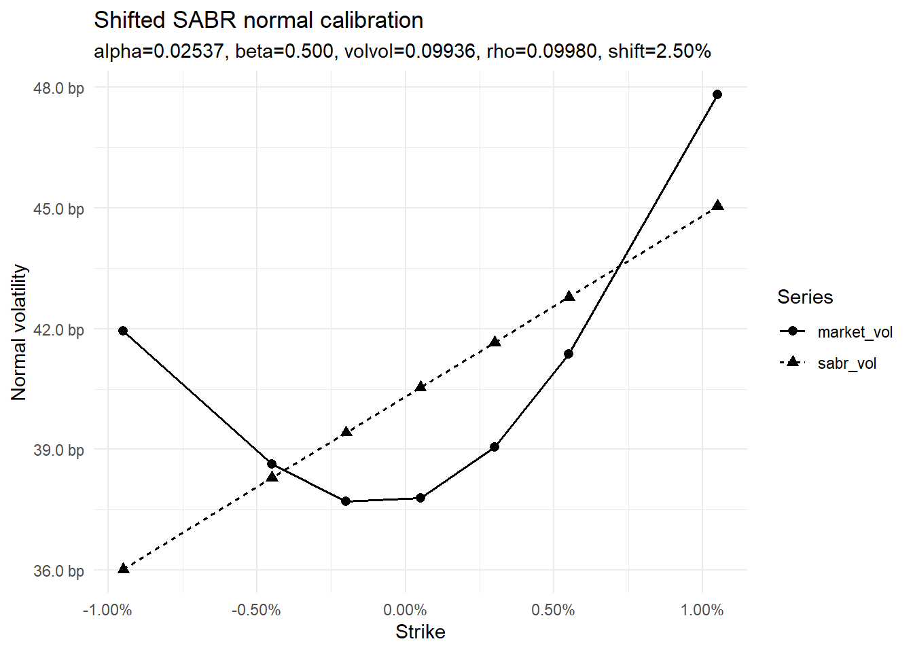

knitr::opts_chunk$set(
collapse = TRUE,
comment = "#>",
warning = FALSE,
message = FALSE
)
suppressPackageStartupMessages({
library(tidyverse)
library(ggthemes)
library(QuantLib)
library(GaussQuant)
library(tidyverse)
library(broom)
})第II-6章 SABRモデル
前章までのBlackモデルとNormalモデルでは、満期とStrikeが同じオプションに対して、一つのボラティリティを与えた。しかし、実際のオプション市場では、同じ満期であってもStrikeごとに異なるインプライド・ボラティリティが観測される。このStrike方向の形状をボラティリティ・スマイルまたはスキューと呼ぶ。
SABRモデルは、フォワード価格またはフォワード金利と、そのボラティリティを同時に確率変数として扱う。モデル名は、Stochastic Alpha Beta Rhoの頭文字に由来する。
フォワード \(F_t\) とボラティリティ係数 \(\alpha_t\) の動学を、概念的に次のように表す。
\[ dF_t = \alpha_t F_t^\beta\,dW_t^{(1)} \]
\[ d\alpha_t = \nu\alpha_t\,dW_t^{(2)} \]
\[ dW_t^{(1)}dW_t^{(2)} = \rho\,dt \]
SABRモデルには、\(\alpha\)、\(\beta\)、\(\nu\)、\(\rho\) の4パラメータがある。
- \(\alpha\) はボラティリティ水準を主に決定する。
- \(\beta\) はフォワード水準に対する変動幅の依存度を表す。
- \(\nu\) はボラティリティ自体の変動性であり、スマイルの曲率に強く影響する。
- \(\rho\) はフォワードとボラティリティの相関であり、スマイルの左右非対称性に影響する。
\(\beta=1\) は対数正規型に近く、\(\beta=0\) はNormal型に近い。実務では4パラメータを同時推定すると不安定になりやすいため、\(\beta\) をあらかじめ固定し、\(\alpha\)、\(\nu\)、\(\rho\) を市場ボラティリティへカリブレーションすることが多い。
本章では、まずBlack volatilityのスマイルへSABRモデルを適合させる。次に各パラメータがスマイルの形状へ与える影響を確認する。最後に、負のStrikeを含むNormal volatilityの市場データに対してShifted SABRを適用する。
6.1 SABRモデルとパラメータ
6.1.1 SABRパラメータの役割
SABRの各パラメータは完全に独立してスマイルを動かすわけではないが、主な役割は次のように整理できる。
6.1.2 Alpha
\(\alpha\) は初期ボラティリティ水準である。他の条件を固定して\(\alpha\)を上げると、スマイル全体が概ね上方へ移動する。
6.1.3 Beta
\(\beta\) はフォワード水準に対する弾性を表す。
\[ \text{instantaneous volatility} = \alpha_tF_t^\beta \]
\(\beta=1\) では変動幅がフォワード水準に比例し、Blackモデルに近い。\(\beta=0\) では変動幅がフォワード水準に依存せず、Normalモデルに近い。
6.1.4 Volatility of volatility
\(\nu\) はvolatility of volatility、すなわちvol-of-volである。\(\nu\)が大きいほど、ボラティリティが将来大きく変化する可能性が高まり、一般にスマイルの曲率が強くなる。
本章のコードでは、変数名として volvol を使用する。
6.1.5 Rho
\(\rho\) はフォワード変化とボラティリティ変化の相関である。負の\(\rho\)は、フォワード低下時にボラティリティが上昇しやすい構造を表し、低Strike側のボラティリティを相対的に高くする。
6.1.6 Hagan近似とカリブレーション
SABRモデルの市場利用では、Haganらによる近似式を用いて、SABRパラメータからBlack volatilityまたはNormal volatilityを計算することが多い。
市場Strikeを \(K_i\)、市場ボラティリティを \(\sigma_i^{\mathrm{mkt}}\)、 SABR近似値を \(\sigma_i^{\mathrm{SABR}}\) とする。本章では、適合度を次のRMSEで測定する。
\[ \mathrm{RMSE} = \sqrt{ \frac{1}{n} \sum_{i=1}^{n} \left( \sigma_i^{\mathrm{mkt}} - \sigma_i^{\mathrm{SABR}} \right)^2 } \]
\(\beta\)を固定し、RMSEが最小となる \(\alpha\)、\(\nu\)、\(\rho\) を数値的に求める。
6.2 Black SABRのカリブレーション
6.2.1 市場データ
フォワードを0.56%、満期を2年、\(\beta=0.5\)とする。市場Black volatilityはStrikeごとに異なり、明確なスマイルを形成している。
black_market_data <- tibble::tribble(
~strike_pct, ~market_vol_pct,
0.06, 90.78,
0.31, 46.09,
0.56, 45.30,
0.81, 50.17,
1.06, 53.85,
1.56, 58.42,
2.56, 62.72
) |>
dplyr::mutate(
strike = .data$strike_pct / 100,
market_vol = .data$market_vol_pct / 100
)
forward_black <- 0.0056
maturity_black <- 2
beta_black <- 0.5
black_model_inputs <- tibble::tribble(
~input, ~value,
"forward", forward_black,
"maturity", maturity_black,
"fixed_beta", beta_black
)
initial_parameters_black <- c(
alpha = 0.1,
volvol = 0.1,
rho = 0.1
)
GaussQuant::show_tbl_GQH(
black_market_data |>
dplyr::select(
.data$strike,
.data$market_vol
),
"Black SABR market data",
n = 20
)
#> # A tibble: 7 × 2
#> strike market_vol
#> <dbl> <dbl>
#> 1 0.0006 0.908
#> 2 0.0031 0.461
#> 3 0.0056 0.453
#> 4 0.0081 0.502
#> 5 0.0106 0.538
#> 6 0.0156 0.584
#> 7 0.0256 0.627
GaussQuant::show_tbl_GQH(
black_model_inputs,
"Black SABR model inputs",
n = 20
)
#> # A tibble: 3 × 2
#> input value
#> <chr> <dbl>
#> 1 forward 0.0056
#> 2 maturity 2
#> 3 fixed_beta 0.5ATMに近いStrikeは0.56%であり、フォワード0.56%と一致する。ATM付近の水準は主に\(\alpha\)に影響し、両翼の形状が\(\nu\)と\(\rho\)の推定に影響する。
6.2.2 パラメータ・カリブレーション
目的関数では、各StrikeにおけるQuantLibのSABR Black volatilityと市場Black volatilityのRMSEを計算する。
objective_sabr_black <- function(parameters) {
alpha <- parameters[[1]]
volvol <- parameters[[2]]
rho <- parameters[[3]]
if (
alpha <= 0 ||
volvol < 0 ||
rho <= -0.9999 ||
rho >= 0.9999
) {
return(1e6)
}
calculated_volatility <- purrr::map_dbl(
black_market_data$strike,
function(strike_value) {
GaussQuant::safe_sabr_vol_GQL(
strike = strike_value,
forward = forward_black,
maturity = maturity_black,
alpha = alpha,
beta = beta_black,
volvol = volvol,
rho = rho
)
}
)
if (
any(is.na(calculated_volatility)) ||
any(!is.finite(calculated_volatility))
) {
return(1e6)
}
GaussQuant::rmse_GQH(
actual = black_market_data$market_vol,
fitted = calculated_volatility
)
}
black_fit <- stats::optim(
par = initial_parameters_black,
fn = objective_sabr_black,
method = "L-BFGS-B",
lower = c(
0.0001,
0,
-0.9999
),
upper = c(
Inf,
Inf,
0.9999
)
)
black_parameters <- black_fit$par
black_calculated_volatility <- purrr::map_dbl(
black_market_data$strike,
function(strike_value) {
GaussQuant::safe_sabr_vol_GQL(
strike = strike_value,
forward = forward_black,
maturity = maturity_black,
alpha = black_parameters[[1]],
beta = beta_black,
volvol = black_parameters[[2]],
rho = black_parameters[[3]]
)
}
)
black_calibration_tbl <- tibble::tribble(
~parameter, ~value,
"alpha", black_parameters[[1]],
"beta", beta_black,
"volvol", black_parameters[[2]],
"rho", black_parameters[[3]],
"rmse", black_fit$value,
"convergence_code", black_fit$convergence
)
GaussQuant::show_tbl_GQH(
black_calibration_tbl,
"Black SABR calibration summary",
n = 20
)
#> # A tibble: 6 × 2
#> parameter value
#> <chr> <dbl>
#> 1 alpha 0.0306
#> 2 beta 0.5
#> 3 volvol 0.728
#> 4 rho 0.449
#> 5 rmse 0.0139
#> 6 convergence_code 0convergence_codeが0であれば、optim()は通常の収束条件を満たして終了している。RMSEは市場ボラティリティとモデル値の平均的な誤差を表す。
6.2.3 ボラティリティ・スマイル
black_smile_tbl <- black_market_data |>
dplyr::transmute(
strike = .data$strike,
market_vol = .data$market_vol,
sabr_vol = black_calculated_volatility,
residual = .data$market_vol -
black_calculated_volatility
)
black_smile_plot_tbl <- black_smile_tbl |>
dplyr::select(
.data$strike,
.data$market_vol,
.data$sabr_vol
) |>
tidyr::pivot_longer(
cols = c(
market_vol,
sabr_vol
),
names_to = "series",
values_to = "volatility"
)
black_smile_plot <- ggplot2::ggplot(
black_smile_plot_tbl,
ggplot2::aes(
x = .data$strike,
y = .data$volatility,
group = .data$series,
linetype = .data$series,
shape = .data$series
)
) +
ggplot2::geom_line(
linewidth = 0.6
) +
ggplot2::geom_point(
size = 2.2
) +
ggplot2::scale_x_continuous(
labels = function(x) sprintf("%.2f%%", 100 * x)
) +
ggplot2::scale_y_continuous(
labels = function(x) sprintf("%.0f%%", 100 * x)
) +
ggplot2::labs(
title = "Black SABR calibration",
subtitle = paste0(
"alpha=",
sprintf("%.5f", black_parameters[[1]]),
", beta=",
sprintf("%.3f", beta_black),
", volvol=",
sprintf("%.5f", black_parameters[[2]]),
", rho=",
sprintf("%.5f", black_parameters[[3]])
),
x = "Strike",
y = "Black volatility",
linetype = "Series",
shape = "Series"
) +
ggplot2::theme_minimal()
GaussQuant::show_tbl_GQH(
black_smile_tbl,
"Black SABR smile table",
n = 20
)
#> # A tibble: 7 × 4
#> strike market_vol sabr_vol residual
#> <dbl> <dbl> <dbl> <dbl>
#> 1 0.0006 0.908 0.897 0.0108
#> 2 0.0031 0.461 0.485 -0.0240
#> 3 0.0056 0.453 0.449 0.00402
#> 4 0.0081 0.502 0.489 0.0125
#> 5 0.0106 0.538 0.528 0.0106
#> 6 0.0156 0.584 0.583 0.000924
#> 7 0.0256 0.627 0.646 -0.0193
print(black_smile_plot)
SABRはすべての市場点を完全に通過する補間法ではなく、少数のパラメータでスマイル全体の形状を表現するモデルである。残差が完全にゼロでなくても、Strike方向に滑らかなボラティリティを与えられる点に意味がある。
6.3 SABRパラメータの感応度
推定結果を基準として、一つのパラメータだけを上下させた場合のスマイルを確認する。パラメータ間には相互作用があるため、これは厳密なリスク分解ではなく、形状を理解するための比較である。
base_parameter_tbl <- tibble::tribble(
~parameter, ~base_value, ~shift,
"alpha", black_parameters[[1]], 0.02,
"beta", beta_black, 0.20,
"volvol", black_parameters[[2]], 0.40,
"rho", black_parameters[[3]], 0.44
)
base_parameters <- stats::setNames(
base_parameter_tbl$base_value,
base_parameter_tbl$parameter
)
parameter_shifts <- stats::setNames(
base_parameter_tbl$shift,
base_parameter_tbl$parameter
)
sabr_sensitivity_tbl <- purrr::map_dfr(
names(base_parameters),
function(parameter_name) {
parameters_up <- base_parameters
parameters_down <- base_parameters
parameters_up[[parameter_name]] <-
parameters_up[[parameter_name]] +
parameter_shifts[[parameter_name]]
parameters_down[[parameter_name]] <-
parameters_down[[parameter_name]] -
parameter_shifts[[parameter_name]]
parameters_up[["alpha"]] <- max(
parameters_up[["alpha"]],
1e-6
)
parameters_down[["alpha"]] <- max(
parameters_down[["alpha"]],
1e-6
)
parameters_up[["beta"]] <- min(
max(parameters_up[["beta"]], 0),
1
)
parameters_down[["beta"]] <- min(
max(parameters_down[["beta"]], 0),
1
)
parameters_up[["volvol"]] <- max(
parameters_up[["volvol"]],
0
)
parameters_down[["volvol"]] <- max(
parameters_down[["volvol"]],
0
)
parameters_up[["rho"]] <- min(
max(parameters_up[["rho"]], -0.95),
0.95
)
parameters_down[["rho"]] <- min(
max(parameters_down[["rho"]], -0.95),
0.95
)
scenario_parameter_tbl <- tibble::tribble(
~scenario, ~alpha, ~beta, ~volvol, ~rho,
"base", base_parameters[["alpha"]], base_parameters[["beta"]], base_parameters[["volvol"]], base_parameters[["rho"]],
"up", parameters_up[["alpha"]], parameters_up[["beta"]], parameters_up[["volvol"]], parameters_up[["rho"]],
"down", parameters_down[["alpha"]], parameters_down[["beta"]], parameters_down[["volvol"]], parameters_down[["rho"]]
)
purrr::pmap_dfr(
scenario_parameter_tbl,
function(
scenario,
alpha,
beta,
volvol,
rho
) {
tibble::tibble(
strike = black_market_data$strike,
volatility = purrr::map_dbl(
black_market_data$strike,
function(strike_value) {
GaussQuant::safe_sabr_vol_GQL(
strike = strike_value,
forward = forward_black,
maturity = maturity_black,
alpha = alpha,
beta = beta,
volvol = volvol,
rho = rho
)
}
),
scenario = scenario,
parameter = parameter_name
)
}
)
}
)
sabr_sensitivity_plot <- ggplot2::ggplot(
sabr_sensitivity_tbl,
ggplot2::aes(
x = .data$strike,
y = .data$volatility,
group = .data$scenario,
linetype = .data$scenario
)
) +
ggplot2::geom_line(
linewidth = 0.6
) +
ggplot2::facet_wrap(
~parameter,
scales = "free_y"
) +
ggplot2::scale_x_continuous(
labels = function(x) sprintf("%.2f%%", 100 * x)
) +
ggplot2::scale_y_continuous(
labels = function(x) sprintf("%.0f%%", 100 * x)
) +
ggplot2::labs(
title = "SABR parameter sensitivity",
x = "Strike",
y = "Black volatility",
linetype = "Scenario"
) +
ggplot2::theme_minimal()
GaussQuant::show_tbl_GQH(
base_parameter_tbl,
"SABR sensitivity settings",
n = 20
)
#> # A tibble: 4 × 3
#> parameter base_value shift
#> <chr> <dbl> <dbl>
#> 1 alpha 0.0306 0.02
#> 2 beta 0.5 0.2
#> 3 volvol 0.728 0.4
#> 4 rho 0.449 0.44
print(sabr_sensitivity_plot)
一般に、\(\alpha\)はスマイルの水準、\(\nu\)は曲率、\(\rho\)は傾きと左右非対称性に強く影響する。\(\beta\)も水準と傾きの双方へ影響するため、他のパラメータとの識別が難しい。このため、\(\beta\)を市場慣行や過去推定値に基づいて固定することが多い。
6.4 Shifted SABRと負の金利
通常のBlack SABR近似では、フォワードとStrikeが正である必要がある。負の金利を含む市場では、フォワードとStrikeへ同じShift \(s\) を加える。
\[ \widetilde{F} = F+s \]
\[ \widetilde{K} = K+s \]
Shift後の値が正であれば、対数やべき乗を含むSABR近似を適用できる。
本章では、Normal volatilityの市場データに対して、Shiftを加えたHagan近似を使用する。出力はNormal volatilityであるが、内部ではShift後のフォワードとStrikeを使ってスマイルを表現する。
Shiftは負の金利を消してしまう調整ではない。モデル計算上の座標を移動するだけであり、実際のStrikeとフォワードは元の水準のまま解釈する。
6.5 Shifted SABR Normalのカリブレーション
6.5.1 市場データ
フォワードを0.05%、満期を2年、\(\beta=0.5\)、Shiftを2.5%とする。市場データにはマイナス0.95%のStrikeが含まれる。
normal_market_data <- tibble::tribble(
~strike_pct, ~market_vol_bp,
-0.95, 41.94,
-0.45, 38.64,
-0.20, 37.71,
0.05, 37.80,
0.30, 39.05,
0.55, 41.37,
1.05, 47.81
) |>
dplyr::mutate(
strike = .data$strike_pct / 100,
market_vol = .data$market_vol_bp / 10000
)
forward_normal <- 0.0005
maturity_normal <- 2
beta_normal <- 0.5
shift_normal <- 0.025
normal_model_inputs <- tibble::tribble(
~input, ~value,
"forward", forward_normal,
"maturity", maturity_normal,
"fixed_beta", beta_normal,
"shift", shift_normal
)
initial_parameters_normal <- c(
alpha = 0.1,
volvol = 0.1,
rho = 0.1
)
GaussQuant::show_tbl_GQH(
normal_market_data |>
dplyr::select(
.data$strike,
.data$market_vol
),
"Shifted SABR normal market data",
n = 20
)
#> # A tibble: 7 × 2
#> strike market_vol
#> <dbl> <dbl>
#> 1 -0.0095 0.00419
#> 2 -0.0045 0.00386
#> 3 -0.002 0.00377
#> 4 0.0005 0.00378
#> 5 0.003 0.00390
#> 6 0.0055 0.00414
#> 7 0.0105 0.00478
GaussQuant::show_tbl_GQH(
normal_model_inputs,
"Shifted SABR normal model inputs",
n = 20
)
#> # A tibble: 4 × 2
#> input value
#> <chr> <dbl>
#> 1 forward 0.0005
#> 2 maturity 2
#> 3 fixed_beta 0.5
#> 4 shift 0.025すべての市場Strikeについて、
\[ K+s>0 \]
が必要である。本例の最小Strikeはマイナス0.95%、Shiftは2.5%であるため、Shift後のStrikeは正となる。
6.5.2 パラメータ・カリブレーション
Black SABRと同様に\(\beta\)を固定し、\(\alpha\)、\(\nu\)、\(\rho\)を推定する。目的関数はNormal volatility単位のRMSEである。
objective_sabr_normal <- function(parameters) {
alpha <- parameters[[1]]
volvol <- parameters[[2]]
rho <- parameters[[3]]
if (
alpha <= 0.001 ||
volvol < 0 ||
rho <= -0.999 ||
rho >= 0.999
) {
return(1e6)
}
calculated_volatility <- purrr::map_dbl(
normal_market_data$strike,
function(strike_value) {
GaussQuant::shifted_normal_vol_hagan_GQL(
strike = strike_value,
forward = forward_normal,
maturity = maturity_normal,
beta = beta_normal,
alpha = alpha,
volvol = volvol,
rho = rho,
shift = shift_normal
)
}
)
if (
any(is.na(calculated_volatility)) ||
any(!is.finite(calculated_volatility))
) {
return(1e6)
}
GaussQuant::rmse_GQH(
actual = normal_market_data$market_vol,
fitted = calculated_volatility
)
}
normal_fit <- stats::optim(
par = initial_parameters_normal,
fn = objective_sabr_normal,
method = "L-BFGS-B",
lower = c(
0.001,
0,
-0.999
),
upper = c(
Inf,
Inf,
0.999
)
)
normal_parameters <- normal_fit$par
normal_calculated_volatility <- purrr::map_dbl(
normal_market_data$strike,
function(strike_value) {
GaussQuant::shifted_normal_vol_hagan_GQL(
strike = strike_value,
forward = forward_normal,
maturity = maturity_normal,
beta = beta_normal,
alpha = normal_parameters[[1]],
volvol = normal_parameters[[2]],
rho = normal_parameters[[3]],
shift = shift_normal
)
}
)
normal_calibration_tbl <- tibble::tribble(
~parameter, ~value,
"alpha", normal_parameters[[1]],
"beta", beta_normal,
"volvol", normal_parameters[[2]],
"rho", normal_parameters[[3]],
"shift", shift_normal,
"rmse", normal_fit$value,
"convergence_code", normal_fit$convergence
)
GaussQuant::show_tbl_GQH(
normal_calibration_tbl,
"Shifted SABR normal calibration summary",
n = 20
)
#> # A tibble: 7 × 2
#> parameter value
#> <chr> <dbl>
#> 1 alpha 0.0254
#> 2 beta 0.5
#> 3 volvol 0.0994
#> 4 rho 0.0998
#> 5 shift 0.025
#> 6 rmse 0.000298
#> 7 convergence_code 06.5.3 Normalボラティリティ・スマイル
normal_smile_tbl <- normal_market_data |>
dplyr::transmute(
strike = .data$strike,
market_vol = .data$market_vol,
sabr_vol = normal_calculated_volatility,
residual = .data$market_vol -
normal_calculated_volatility
)
normal_smile_plot_tbl <- normal_smile_tbl |>
dplyr::select(
.data$strike,
.data$market_vol,
.data$sabr_vol
) |>
tidyr::pivot_longer(
cols = c(
market_vol,
sabr_vol
),
names_to = "series",
values_to = "volatility"
)
normal_smile_plot <- ggplot2::ggplot(
normal_smile_plot_tbl,
ggplot2::aes(
x = .data$strike,
y = .data$volatility,
group = .data$series,
linetype = .data$series,
shape = .data$series
)
) +
ggplot2::geom_line(
linewidth = 0.6
) +
ggplot2::geom_point(
size = 2.2
) +
ggplot2::scale_x_continuous(
labels = function(x) sprintf("%.2f%%", 100 * x)
) +
ggplot2::scale_y_continuous(
labels = function(x) sprintf("%.1f bp", 10000 * x)
) +
ggplot2::labs(
title = "Shifted SABR normal calibration",
subtitle = paste0(
"alpha=",
sprintf("%.5f", normal_parameters[[1]]),
", beta=",
sprintf("%.3f", beta_normal),
", volvol=",
sprintf("%.5f", normal_parameters[[2]]),
", rho=",
sprintf("%.5f", normal_parameters[[3]]),
", shift=",
sprintf("%.2f%%", 100 * shift_normal)
),
x = "Strike",
y = "Normal volatility",
linetype = "Series",
shape = "Series"
) +
ggplot2::theme_minimal()
GaussQuant::show_tbl_GQH(
normal_smile_tbl |>
dplyr::mutate(
market_vol_bp = 10000 * .data$market_vol,
sabr_vol_bp = 10000 * .data$sabr_vol,
residual_bp = 10000 * .data$residual
),
"Shifted SABR normal smile table",
n = 20
)
#> # A tibble: 7 × 7
#> strike market_vol sabr_vol residual market_vol_bp sabr_vol_bp residual_bp
#> <dbl> <dbl> <dbl> <dbl> <dbl> <dbl> <dbl>
#> 1 -0.0095 0.00419 0.00360 0.000593 41.9 36.0 5.93
#> 2 -0.0045 0.00386 0.00383 0.0000348 38.6 38.3 0.348
#> 3 -0.002 0.00377 0.00394 -0.000170 37.7 39.4 -1.70
#> 4 0.0005 0.00378 0.00405 -0.000273 37.8 40.5 -2.73
#> 5 0.003 0.00390 0.00417 -0.000261 39.0 41.7 -2.61
#> 6 0.0055 0.00414 0.00428 -0.000141 41.4 42.8 -1.41
#> 7 0.0105 0.00478 0.00450 0.000277 47.8 45.0 2.77
print(normal_smile_plot)
Black volatilityとNormal volatilityは単位が異なるため、Black SABRのRMSEとShifted SABR NormalのRMSEを数値の大きさだけで直接比較してはならない。Black側は相対ボラティリティ、Normal側は金利の絶対変化幅である。
6.6 外挿とモデル比較
6.6.1 カリブレーション範囲外のStrike
SABRモデルは、市場点の間を滑らかにつなぐだけでなく、市場点の外側にもボラティリティを与える。ただし、外挿結果は観測データによる制約が弱く、パラメータの影響を強く受ける。
次のコードでは、市場データの外側にある二つのStrikeについてNormal volatilityを確認する。
outer_strike_input_tbl <- tibble::tribble(
~label, ~strike,
"lower_wing", -0.0195,
"upper_wing", 0.0205
)
outer_strike_tbl <- outer_strike_input_tbl |>
dplyr::mutate(
shifted_strike = .data$strike +
shift_normal,
normal_volatility = purrr::map_dbl(
.data$strike,
function(strike_value) {
GaussQuant::shifted_normal_vol_hagan_GQL(
strike = strike_value,
forward = forward_normal,
maturity = maturity_normal,
beta = beta_normal,
alpha = normal_parameters[[1]],
volvol = normal_parameters[[2]],
rho = normal_parameters[[3]],
shift = shift_normal
)
}
),
normal_volatility_bp = 10000 *
.data$normal_volatility
)
GaussQuant::show_tbl_GQH(
outer_strike_tbl,
"Shifted SABR outer-strike check",
n = 20
)
#> # A tibble: 2 × 5
#> label strike shifted_strike normal_volatility normal_volatility_bp
#> <chr> <dbl> <dbl> <dbl> <dbl>
#> 1 lower_wing -0.0195 0.0055 0.00307 30.7
#> 2 upper_wing 0.0205 0.0455 0.00496 49.6Shift後のStrikeがゼロ以下となる領域では、この近似式を使用できない。また、数式上計算できる場合でも、カリブレーション範囲から遠い外挿値には注意が必要である。
6.6.2 Black SABRとShifted SABR Normal
二つのカリブレーション結果を一覧にする。
calibration_comparison_tbl <- tibble::tribble(
~model, ~alpha, ~beta, ~volvol, ~rho, ~shift, ~rmse, ~convergence_code,
"Black SABR", black_parameters[[1]], beta_black, black_parameters[[2]], black_parameters[[3]], 0, black_fit$value, black_fit$convergence,
"Shifted SABR Normal", normal_parameters[[1]], beta_normal, normal_parameters[[2]], normal_parameters[[3]], shift_normal, normal_fit$value, normal_fit$convergence
)
GaussQuant::show_tbl_GQH(
calibration_comparison_tbl,
"SABR calibration comparison",
n = 20
)
#> # A tibble: 2 × 8
#> model alpha beta volvol rho shift rmse convergence_code
#> <chr> <dbl> <dbl> <dbl> <dbl> <dbl> <dbl> <int>
#> 1 Black SABR 0.0306 0.5 0.728 0.449 0 0.0139 0
#> 2 Shifted SABR Normal 0.0254 0.5 0.0994 0.0998 0.025 0.000298 0Black SABRでは、正のフォワードとStrikeからBlack volatilityを計算した。Shifted SABR Normalでは、フォワードとStrikeへShiftを加え、負のStrikeを含む市場データへNormal volatilityを適合させた。
どちらも同じ4つのSABRパラメータを用いるが、出力するインプライド・ボラティリティの定義と単位が異なる。したがって、パラメータ値やRMSEを異なるボラティリティ表現の間で単純比較するのではなく、それぞれの市場表示におけるスマイル適合度を確認する。
6.7 まとめ
SABRモデルは、フォワードとそのボラティリティを同時に確率変数として扱い、Strikeごとに異なるインプライド・ボラティリティを少数のパラメータで表現する。
\(\alpha\)は主にボラティリティ水準、\(\nu\)はスマイルの曲率、\(\rho\)は傾きと左右非対称性へ影響する。\(\beta\)はフォワード水準に対する変動幅の弾性を表し、他のパラメータとの識別が難しいため、本章では固定してカリブレーションした。
Black SABRでは、正のフォワードとStrikeを前提としてBlack volatilityのスマイルを評価した。負の金利を含むNormal volatility市場では、フォワードとStrikeへ共通のShiftを加えるShifted SABRを使用した。
SABRは市場ボラティリティを完全に補間することだけを目的とするものではない。Strike方向に滑らかで、パラメータによる解釈が可能なスマイルを構築し、観測されていないStrikeの評価やリスク管理へ利用する。
chapter06_summary_tbl <- tibble::tribble(
~section, ~main_result,
"Black SABR", "Calibration to a Black-volatility smile",
"Parameter sensitivity", "Alpha, beta, vol-of-vol, and rho effects",
"Shifted SABR Normal", "Normal-volatility smile with negative strikes",
"Outer strikes", "Extrapolation outside calibration points"
)
GaussQuant::show_tbl_GQH(
chapter06_summary_tbl,
"Chapter II-6 summary",
n = 20
)
#> # A tibble: 4 × 2
#> section main_result
#> <chr> <chr>
#> 1 Black SABR Calibration to a Black-volatility smile
#> 2 Parameter sensitivity Alpha, beta, vol-of-vol, and rho effects
#> 3 Shifted SABR Normal Normal-volatility smile with negative strikes
#> 4 Outer strikes Extrapolation outside calibration points
cat(
"\nChapter II-6 SABR model completed successfully.\n"
)
#>
#> Chapter II-6 SABR model completed successfully.